Making a film means a lot of files. For every asset in the film, there are probably over 50 files including all the version files for each part of the production. That means things can get messy really quickly. To manage this, I developed a pipeline tool to help with with the asset and file management of our film.
Our file structure is split into a working folder and a publish folder where it is then separated by prop, character, and set. The main aspect of our pipeline tool is that it will analyze the files in the working folder for each asset, find the latest version, and make a version less copy and put it in the publish folder.
For each shot, our file references will come from the publish folder. Which means every time an asset is updated, it will automatically update in each shot file. Because the version control is automated with this tool, we are much more likely to stay organized. Less time digging for files, less time repathing assets, more time spent on quality
Pipeline Tool Blog
December 8, 2025
This past week I worked on the Publish Asset logic. Since I had already applied this logic in my very first prototype from a couple months ago, I had an idea of how the code would look like. It was important that the files that the code read followed a specific naming convention. Each part of the file name was specified as a type.
For ex. lion_geo_v001_sg.usd = "asset_name"_"asset_type"_"version number"_"initials"."ext"
This will ensure that I can have separate logic for each part, make sure it does not collide. I can connect separate dictionaries, without needing to make a function for every scenario. It also makes it easy to add on more departments as I continue to develop the tool, such as CFX which is a department that I have yet to consider.
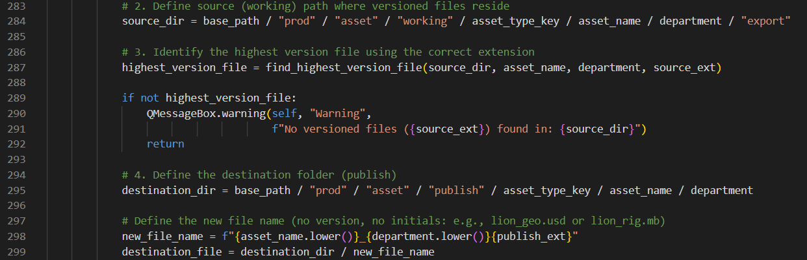
Lastly, I switched from using Streamlit to PyQt for my GUI. After doing some research, PyQt is used inside our 3D softwares such as Maya, Houdini, Nuke, etc so it makes more sense to use a GUI toolkit that aligns with that. PyQt also has an inbuilt Directory Structure widget that behaves the same as file explorer which is something that I would’ve had to spent separate time to develop in Streamlit.
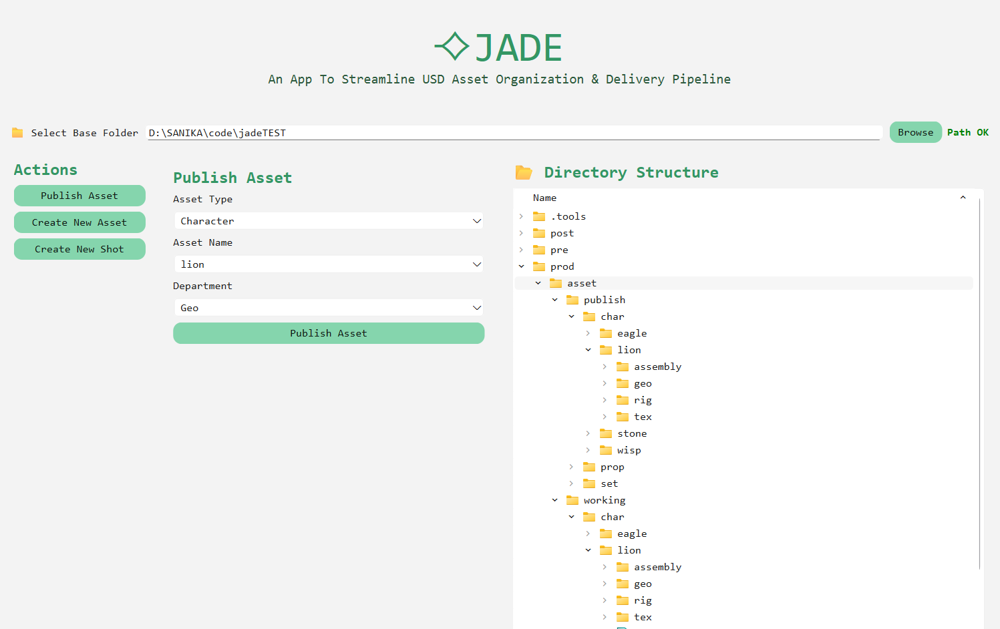
At this stage, I decided to record a preliminary demo and put it in my demo reel. It is now at a point where it is usable to where I can test out pipeline within Houdini and MAYA and then troubleshoot from there.
November 28, 2025
I followed the same structure that was used in New Asset to create New Shots. I made a separate function so that I can write the code to create the name of the shot folders based on user input. I then updated the GUI and added in the buttons needed to create these shots. Again, they are based on the Shot, Sequence dictionary which means the code can remain unchanged if I were to change what folders I want in each shot. And below is the newest GUI.
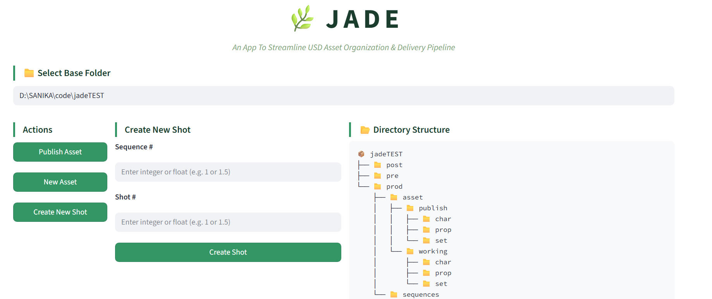
November 27, 2025
I worked on creating the GUI today. I created a list of all the elements I want in my GUI. I want three vertical sections- first section, contains the actions that the user can perform. This contains a “New Asset” and a “Publish Asset” function. The second section opens the window for the action selected. And the third section contains the folder directory, so that you are able to see the results of what the user clicks. I created a very thorough list and inputted this list into Claude AI. This gave me a base GUI that I can use to test my code faster. I can always make changes and make it pretty according to me later.
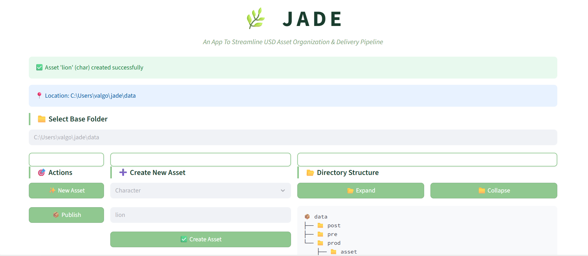
I connected the New Assets function from earlier to the buttons in the GUI and makes sure everything works as it should. (it does!) Next steps, I will work on building the Publish Assets code.
November 24, 2025
Today, I worked on creating the same recursive function for the user directed folder creation. This function would be used to create a consistent file directory for new assets. Like the previous recursive function, I created a dictionary for the file structure I want for the working and publish directories.
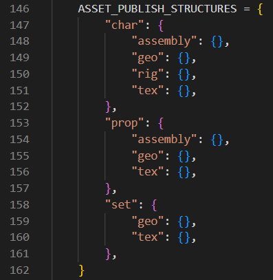
I have two for loops, one for working, one for publish, and I run the same create_paths function as earlier except by passing in the new root directories parameter. My next steps would be to create a GUI and add a user input box.
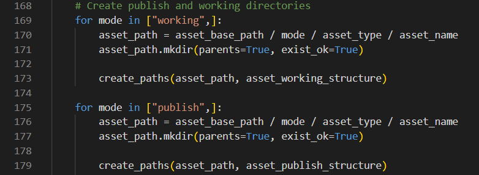
November 22, 2025
The first thing I did was that since this tool was based on creating the file structure in a user informed directory, I had to make sure it ran both in Windows AND Linux. I created a JSON file that includes all the environment variables needed to run the tool. This file would launch the tool, collect the user profile, and create a base directory. In the README, here is where I included that the user can change where they want it given the syntax.
I realized that while making my new file structure I was reusing the same code for each layer of the structure. It ended up with me creating different variables for different parts of the structure that did the exact same thing. This means I can transform my existing code into a function.
I created a dictionary with the base structure- without the user defined folders- which would indicate which folders reside in which folder.
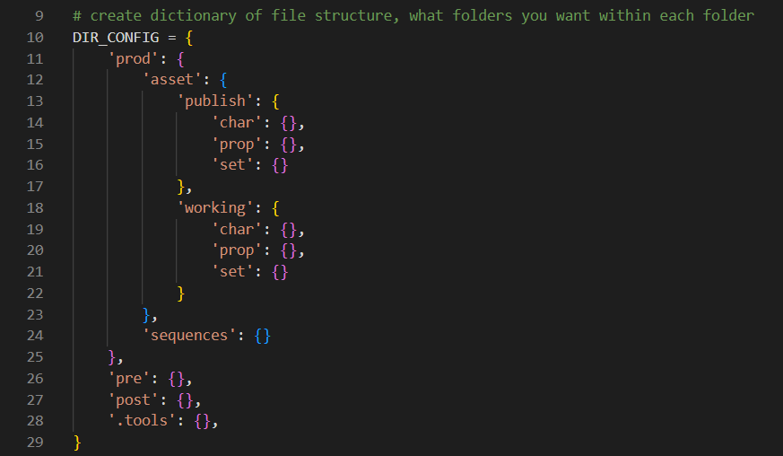
The parameters would include the root directory and the current directory. The recursive pattern of the code makes it so that after the code finishes going through making the folders of the directory it’s in, it makes that the root directory, and the next directory the current directory. It goes through the entire dictionary directory pattern til all the folders have been created.
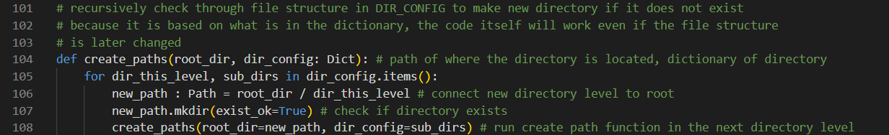
By creating the structure in this way, if the structure changes in the future, I simply have to edit the dictionary without changing the code itself and the tool will still work.
October 2, 2025
Based on the environment variables initialized I started building the file structure within the code itself instead of doing that manually so that I can easily change things around if needed (hopefully this is the final version!) I did restart from what I started in my first blog post. The first iteration was a good learning moment for me to understand the parameters of this project. I am making sure to use forward slashes to stay consistent without Windows and Linux, since I can easily convert it to a raw string for Windows. I am using the Pathlib library to create my file pathing to make my code more procedural and less dependent on manually connecting strings. Here is my github link for the entire code and structure I have so far: https://github.com/sanikagodbole/jade
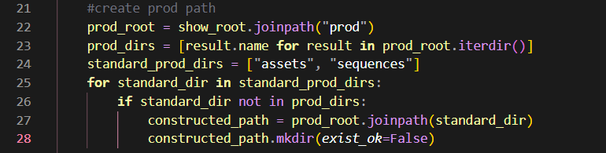
October 1, 2025
In order to prep for asset tracking, I did some research on how to get variables such as user name and computer attributes from the system itself. If I want the code to run a certain way according to a path, it is best to create environment variables that must be initialized before running the code. My side goal is to make sure that this app works for both Windows and Linux operating systems. I also learned about Classes in Python so that I can consistently access these variables in different python files in the same project folder.
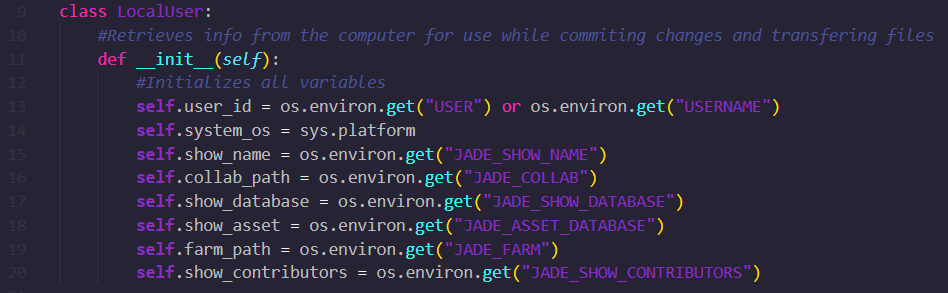
September 9, 2025
I got some feedback on what I had today. This feedback included incorporating some tracking system to indicate when each asset was updating, which asset, and who updated it. I also learned a little about folder structure for the code itself and advice on how to make the code as procedural as possible without needed to hardcode file paths.
We DO have a finalized file structure after researching more about USD and production pipelines from Technical Directors who are already in the industry.
This structure indicated that we can copy the entire export folder from working to the publish folder without having export files in multiple places for each asset type making it a very clean system.
September 14, 2025
I spent today cleaning up the script. There were a lot of lines that I had hardcoded the file paths for just so I could plan out how my variables would work. I made sure to fix those lines and make sure everything in my script was relative pathing. This also makes it easier if needed to change the folder structure (which is highly likely since there has been some back and forth with how we are going to copy the files we need for the Renderfarm). And a long term goal I thought about would be to create this app so that it can be used for any production- not just Stone Lions.
September 12, 2025
I started working incorporating the script for the textures and rigs. Since there was no file conversion for rig files and they will always *.mb all I had to do was copy the latest version file, strip the version number and then copy that file into the publish folder. This was pretty straightforward and is making me wonder if I can ask the artist to export out .usd from their model files as they are already used to exporting .fbx, then I can do the same as what I did for the rig files and there will be no error message.
We are still working on the best file structure to organize our files with. Right now, the dev and publish folders were inside every asset folder. However, for the renderfarm, the final scene usd has to be at the top of the $HIP and we have to figure if too many complicated pathing for the references would cause issues when rendering. We are debating creating a publish asset folder at the top level of the $HIP that would include all the usd copies.
Last thing I worked on today was making the GUI look cute!
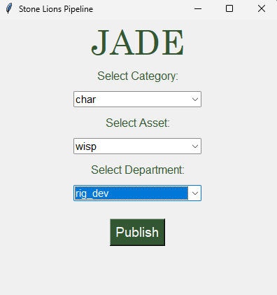
September 10, 2025
The remaining aspects of the model portion of the script included renaming the .usd so that it does not include the version number so that it will always update when the script is run.
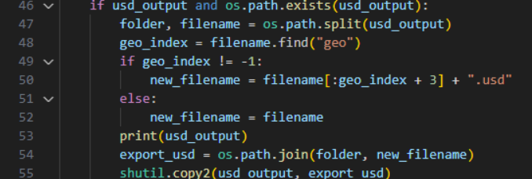
I keep receiving an error message which is causing the script to crash and therefore not return to the main script after the message. For now, I ended up ‘delaying’ the error message so that everything I want occurs before it. So, while there is still a scary message at the end of the script, it completes the function that I created it for before doing so.
The last part of the script is to copy the final usd into the publish render folder. Initially, I wanted the maya script to end and then return to the main script to publish it. However, because of the error, I had to set up the file path again in the maya script and then copy it over within the maya script. So officially, while there still are some tweaks needed to be made for the script to work cleanly, it does work for the pipeline!
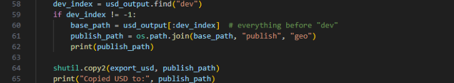
Another issue I have is that within the asset folders. If there are multiple assets, for example: jiejiebust and jiejiearm (for ex) script disregards what it is called and only looks for version number so whichever asset has the highest version number that is all that will be exported. Something I will look into in the upcoming days. My next steps will be to figure out how I can use this same set up for textures, rigs, and animation and tweak things accordingly for those assets.
September 8, 2025
I wanted to create a USD Pipeline tool for my senior capstone film, Stone Lions Don't Roar, to help with file management and asset version control. We have team of 20 people for a 5 minute long film, and a tool to streamline pipeline would make our production process run more smoothly. Additionally, this tool is something I had always wanted to create, and capstone was the perfect moment for me to experiment.
My first step was to write down a potential file structure that we would use. The idea is that there will be a working folder with versions and a publish folder where the most recent version of the USD file will automatically publish to. The final version would be renamed to a version-less name so that the USD in the publish folder will be overwritten and the pipeline would work seamlessly without needing to re-export and import every time a change has been made. This is the folder structure:
The script they would need to run is: python I:\Savannah\CollaborativeSpace\stonelions\tools\fakemarble\pipeline_script.py In Command Prompt. When run, the following basic GUI appears.
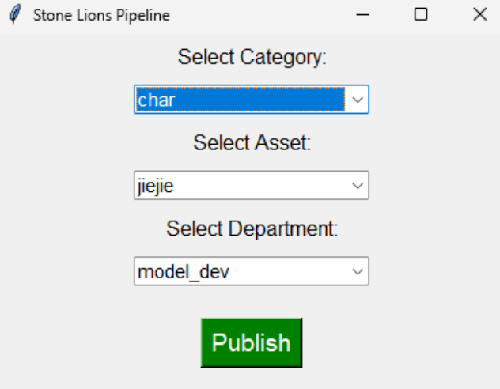
The Categories are char, prop, and set. Based on which Category is selected, the script locates to that folder, and the subfolders of that folder appears in the Asset dropdown menu.
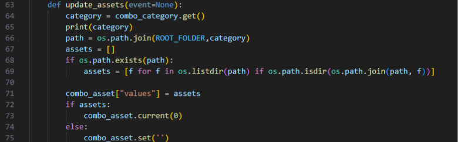
The Department indicated what part of the pipeline you are publishing. This drop down has model, texture, rig, and animation options. When you click Publish, the script connects the user selections to find the file path of what the artist is publishing. It then finds the highest version number of the working files, opens the MAYA file, and exports the geo into a *.usd.
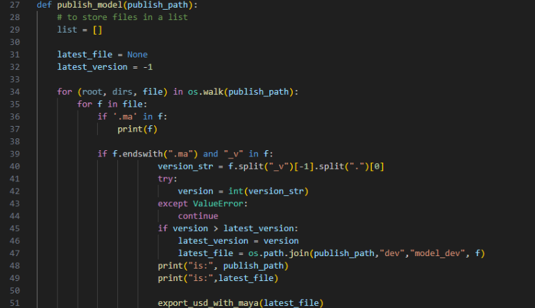
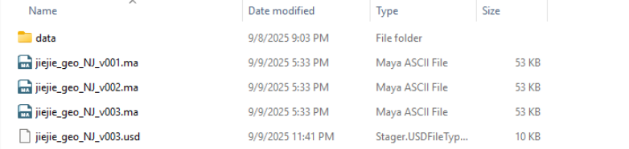
My next steps would be trying to copy this usd file that is created into the final render folder for the shot.